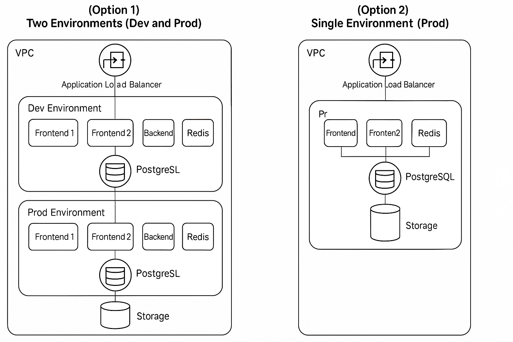

This documentation describes the architecture and functionality of the CIE Market Backend, including its Docker, Jenkins, and modular structure setup.
This is a Django web application structured with reusable apps: accounts and inventors. It supports authentication, user management, and inventory functionality.
.
├── accounts/
├── config/
├── inventors/
├── jenkins_service/
├── Jenkinsfile
├── Makefile
├── manage.py
├── requirements.txt
models.py: Custom user model or profile extensionauthentication.py: Token/session managementserializers.py: DRF serializers for user dataviews.py: Views for login, signup, etc.urls.py: Routing for account endpointsutils.py: Reusable helper functionsmodels.py: Inventory models or objects related to inventionserializers.py: DRF serializers for inventoryviews.py: API views or class-based viewsurls.py: Routing for inventory-related endpointssettings.py: Project-wide settings including apps, DB, REST, etc.urls.py: Root-level routing combining all app URLswsgi.py: WSGI entrypoint for deploymentasgi.py: ASGI entrypoint for async servicesdockerfile: Jenkins + Docker setupentrypoint.sh: Ensures correct Docker socket permissions inside Jenkins containerscript.sh: Script to build and run Jenkins containerdocs.html: HTML docs for Jenkins setupDefines your CI stages such as:
pip install -r requirements.txtpython manage.py runserverpython manage.py makemigrations
python manage.py migratepython manage.py testDocker is used to run Jenkins with access to the host Docker daemon for container builds.
cd jenkins_service
docker build -t jenkins-docker .docker run -d \
--name jenkins-server \
-p 8080:8080 -p 50000:50000 \
-v jenkins_home:/var/jenkins_home \
-v /var/run/docker.sock:/var/run/docker.sock \
jenkins-dockerthis image.png is the first schema of jenkins pipeline

View Jenkins Service DocumentationList of Python dependencies:
# requirements.txt
Django>=5
djangorestframework
# ... more as needed